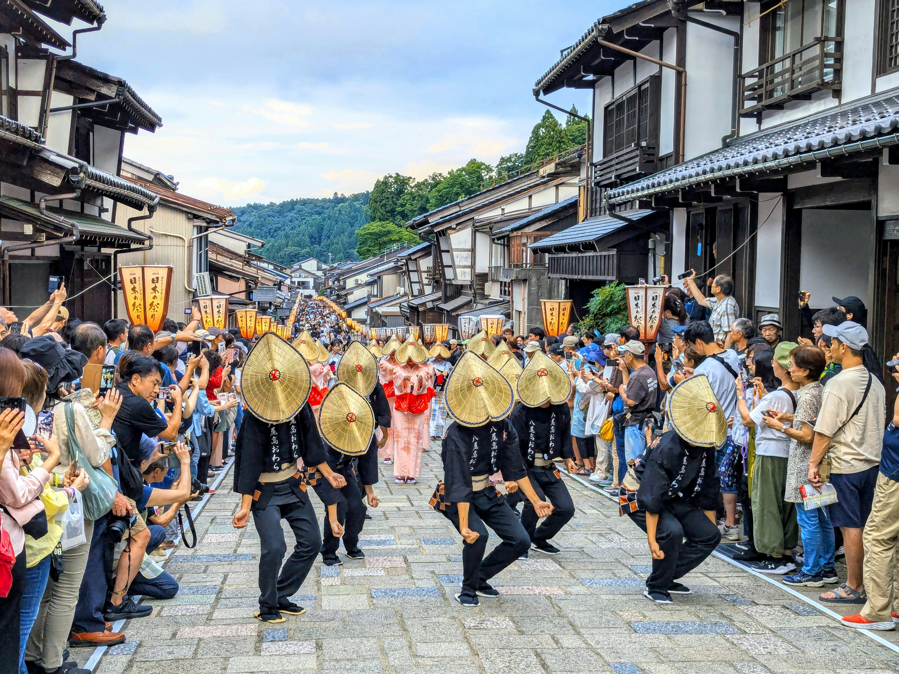
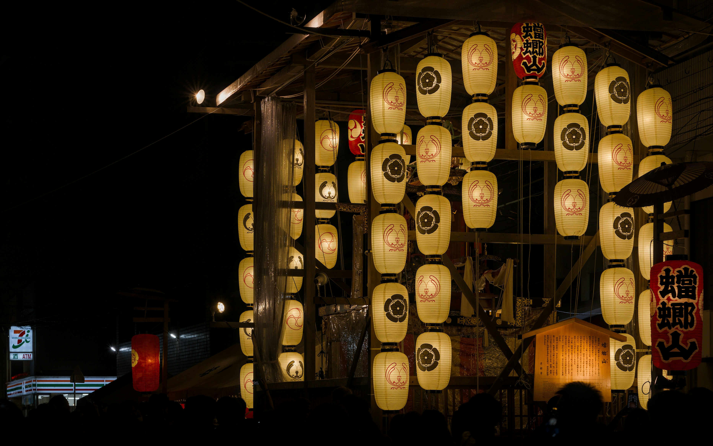
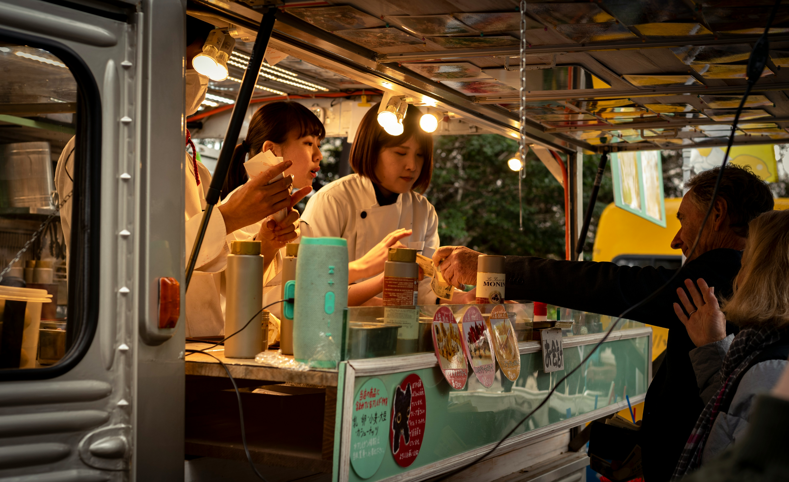

Shoyu Ramen Artesanal
Caldo cozido lentamente por 12 horas, servido com macarrão artesanal, chashu (barriga de porco) e ovo marinado.

Caldo cozido lentamente por 12 horas, servido com macarrão artesanal, chashu (barriga de porco) e ovo marinado.

Seleção de peixes frescos da estação, preparados com técnicas tradicionais de corte e harmonizados com wasabi orgânico.

Doces refinados feitos de feijão azuki, servidos com o tradicional chá verde amargo em uma cerimônia reduzida.
Aperte o play e sinta a atmosfera do evento através do som do Shamisen:



